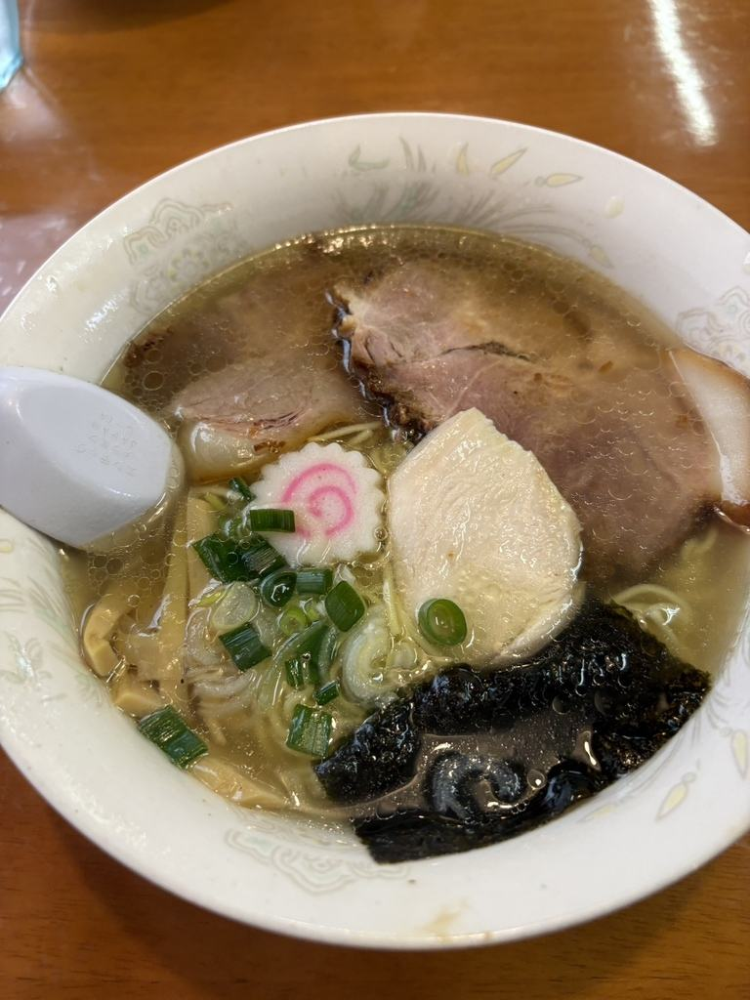
SHIOしおらーめん
当店でいちばん多くご注文いただきます。澄んだスープに、細めのちぢれ麺を合わせております。
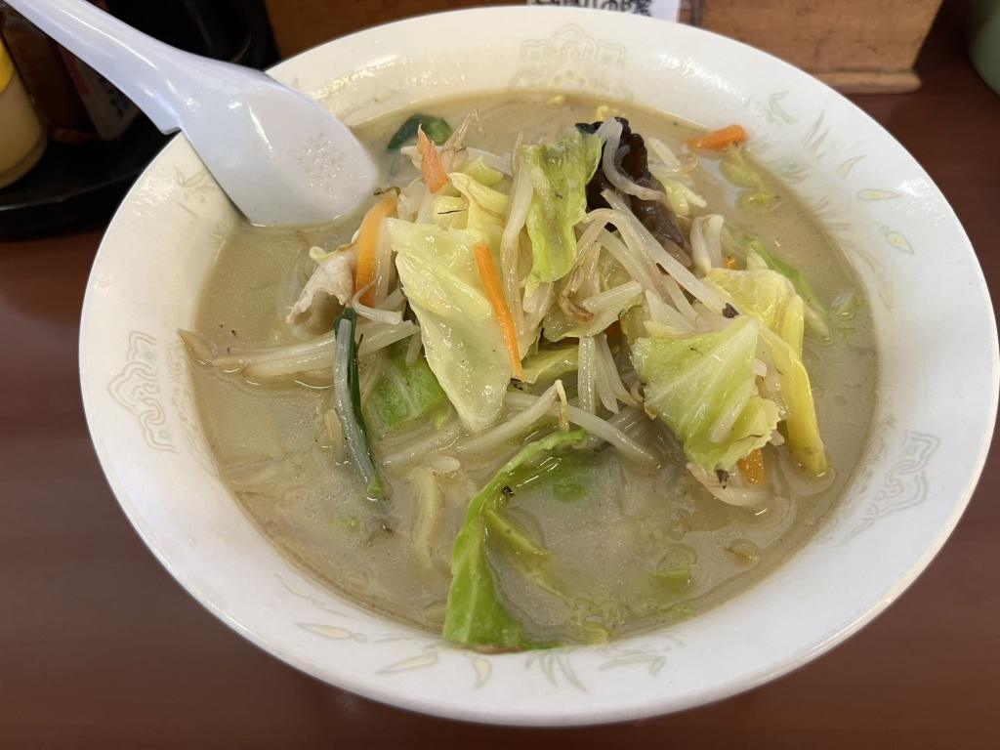
街道一 支那そば・横浜タンメン阿波家
地鶏でひいたスープに、赤ワインを合わせた特製の塩だれを重ねております。野菜は地元産。平日は朝七時から暖簾を出しております。
スープがなくなり次第、その日の営業は終了いたします。開店のお時間にお越しいただくのが、もっとも確かです。売り切れの際は、その日のうちに当日のお知らせ（X）でお伝えしております。
ご予約は承っておりません。お席は先着順ですので、そのままご来店ください。
営業時間を確認中
ご予約は承っておりませんが、その日の営業の状況はお電話でお答えいたします。「まだスープはありますか」「今日は何時までですか」——遠方からお越しの方は、どうぞご遠慮なくおかけください。調理中は出られないことがございますので、その際はしばらくおいてからおかけ直しくださいませ。
茨城県古河市久能975-14。街道沿いに立てております看板が目印です。お車でお越しください。店の前にお停めいただけます。
お昼どきは混み合うことがございます。お待たせしたくない日は、11時台の早いお時間がゆったりとお過ごしいただけます。
朝の部は平日のみ、昼の部は水曜日を除く毎日お出ししております。
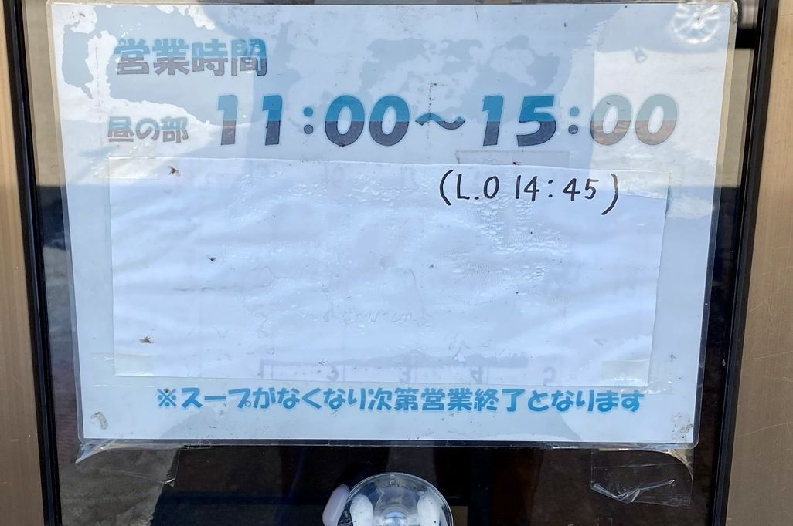
平成24年7月12日、この久能で暖簾を上げました。栃木の中華そば阿波家からのれん分けをいただき、地鶏のスープを店で炊いております。
仕込んだぶんが尽きればその日は終わりですので、遠方からお越しの際は、開店のお時間にお越しくださいませ。定休日は毎週水曜日です。臨時にお休みをいただくことがございますので、お出かけ前に当日のお知らせ（X）をご覧いただくと確かです。
7:00MORNING
令和8年7月9日に朝の部を始めました。以後、平日は毎朝、七時に暖簾を出しております。出勤前のひと椀にどうぞ。
地鶏でひいたスープに、赤ワインの効いた特製の塩だれを重ねております。よくご注文いただくのはこの二品です。

当店でいちばん多くご注文いただきます。澄んだスープに、細めのちぢれ麺を合わせております。
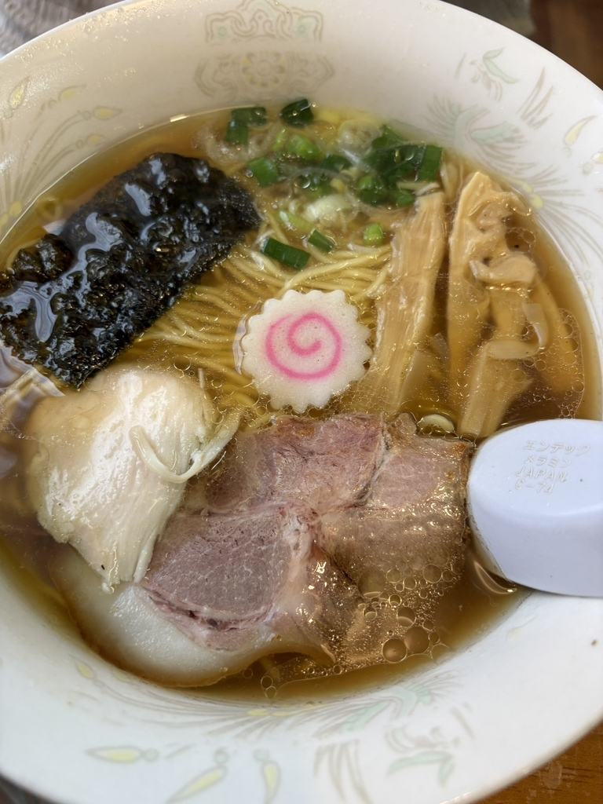
正油の一杯です。豚のチャーシューのほかに、鶏のチャーシューもお入れしております。
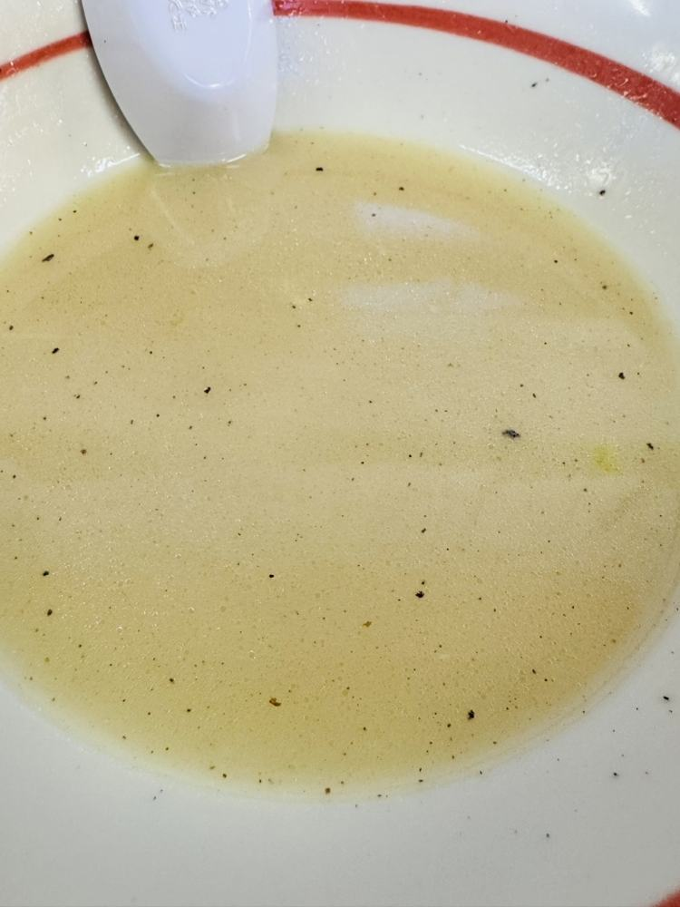
毎朝、店で炊いております。まずはれんげで一口、そのままお召し上がりください。
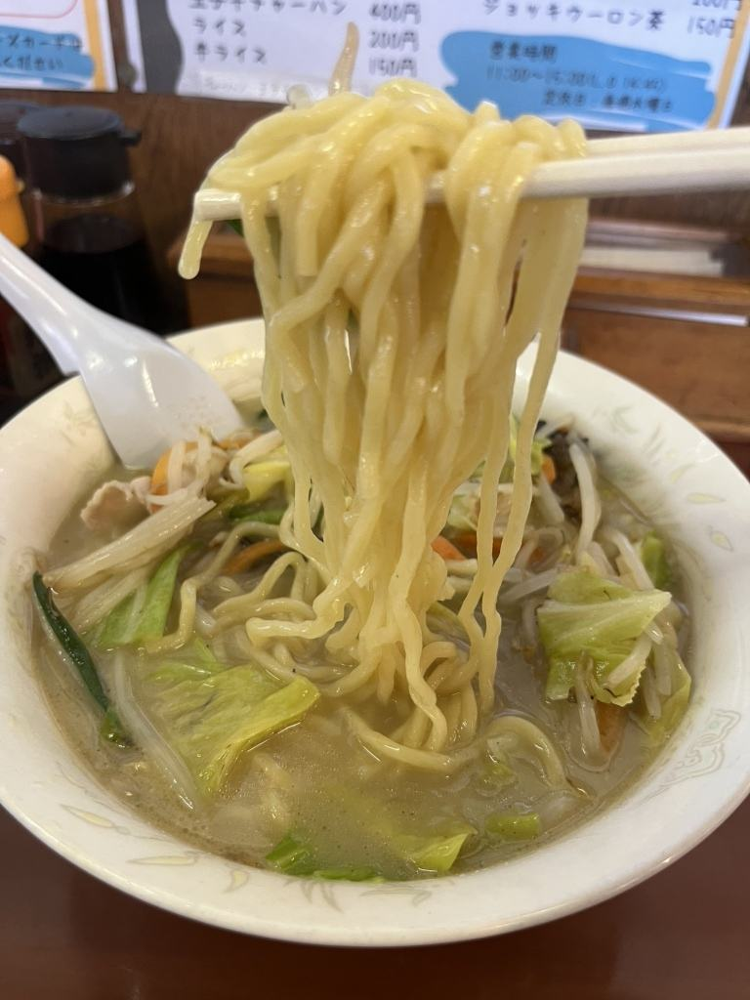
しお・みその二通り、それぞれに赤辛もご用意しております。辛みを効かせておりますのは「赤辛」の二品ですので、お子さまとご一緒の際は「しお」「みそ」をどうぞ。
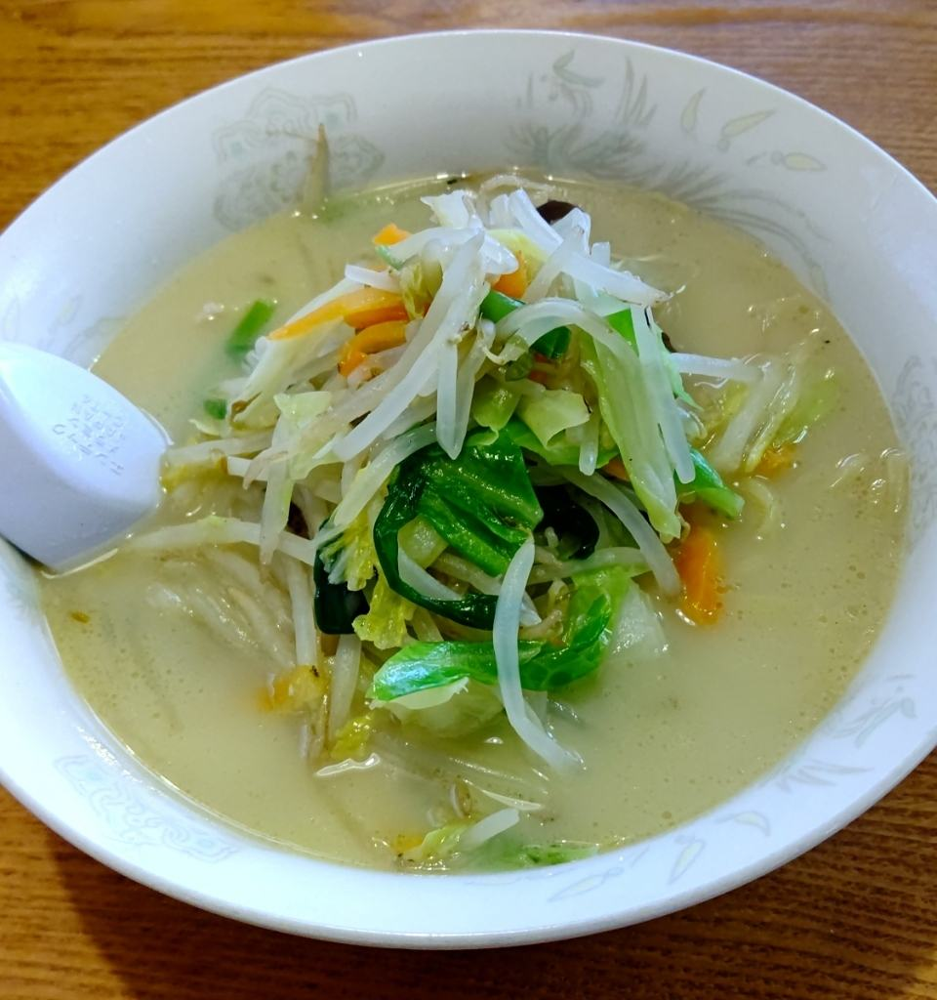
強い火で炒めた野菜を、白濁したスープごとどうぞ。大盛りも替え玉も承ります。
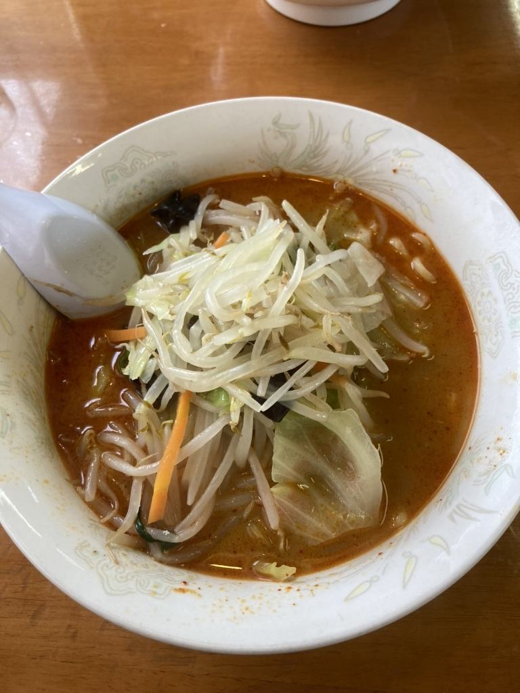
辛いものがお好きな方に。しお・みその二通りからお選びいただけます。
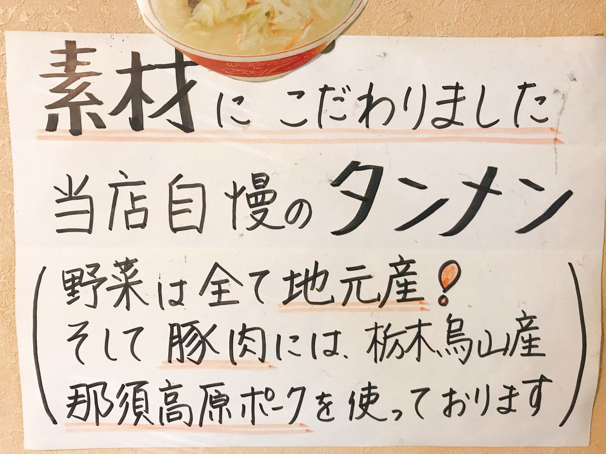
カウンターとテーブル、それにお座敷をご用意しております。全席禁煙です。おひとりさまも、お子さま連れも、どうぞお気軽にお立ち寄りください。
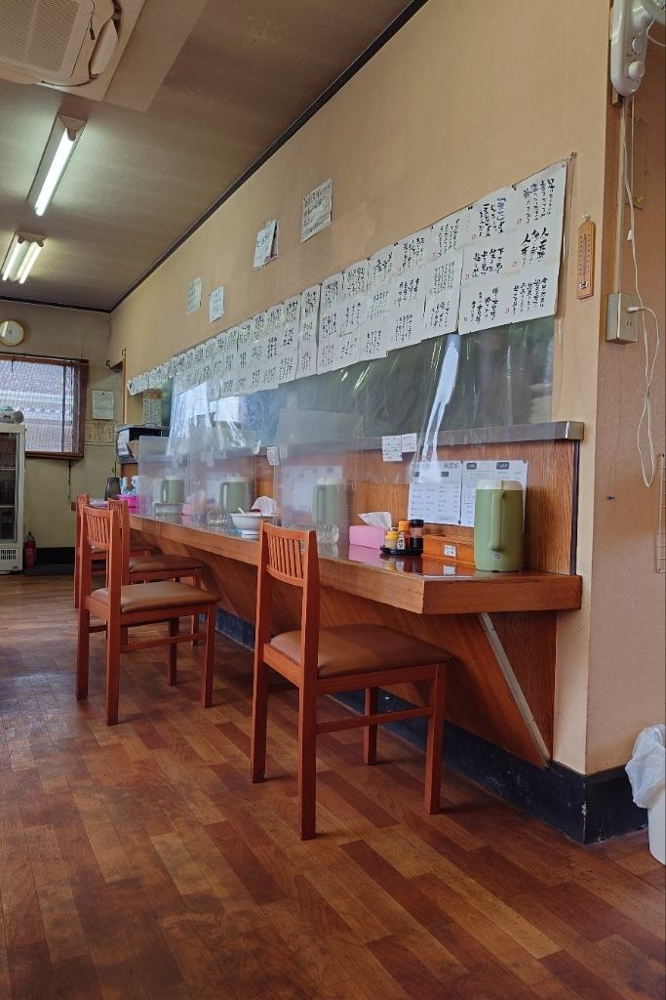
お一人でいらしたお客様には、厨房の見えるカウンターをおすすめしております。目の前の壁には、折にふれて書いた言葉を貼らせていただいております。
お連れ様やご家族でお越しの際は、テーブル席とお座敷もございます。お履き物を脱いで上がっていただけますので、小さなお子さま連れでも落ち着いてお過ごしいただけます。
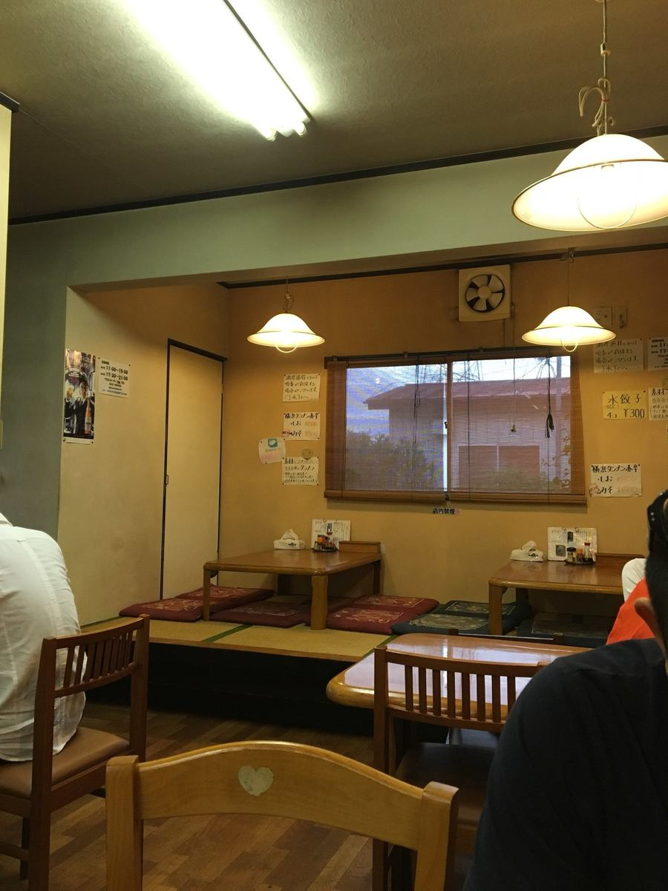
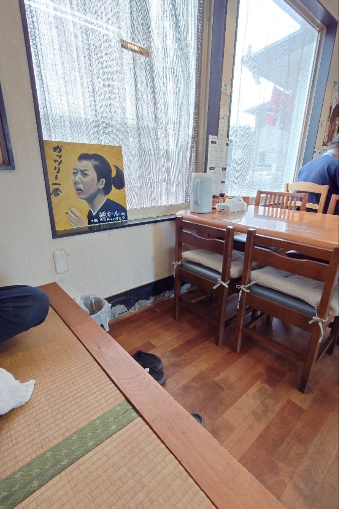
「ここはとにかく塩タンメンが美味い！こんなに美味しいタンメンは初めてです！あと地味に嬉しいのが、大盛りも替え玉もあるところです。」
お客様の声より
「塩タンメンを超える塩タンメン。」
お客様の声より
「駐車場は割と広めなので、停めやすいと思います。」
お客様の声より
古河駅からは離れておりますので、お車でお越しください。店の前にお停めいただけます。
| 店名 | 支那そば・横浜タンメン 阿波家 |
|---|---|
| 住所 | 〒306-0212 茨城県古河市久能975-14 |
| 電話 | 090-9145-3520 ご予約は承っておりませんが、その日の営業の状況はお答えいたします。調理中は出られないことがございます |
| 朝の部 | 7:00〜9:00（月・火・木・金） 土曜・日曜は朝の部はお休みです。祝日の朝はお電話でお確かめください |
| 昼の部 | 11:00〜15:00（ラストオーダー 14:45） スープがなくなり次第、その日の営業は終了いたします |
| 定休日 | 毎週水曜日 夜の部はただいま休業しております。臨時にお休みをいただくことがございますので、お出かけ前に当日のお知らせ（X）をご覧いただくと確かです |
| お席 | カウンター・テーブル・お座敷 お履き物を脱いで上がっていただけるお座敷もございます |
| ご予約 | 承っておりません。お席は先着順ですので、そのままご来店ください |
| 駐車場 | あり（店の前） 看板の下の矢印が入口です |
| 喫煙 | 全席禁煙 |
| お支払い | 現金のみ 恐れ入りますが、クレジットカード・電子マネー・QRコード決済はお取り扱いしておりません |
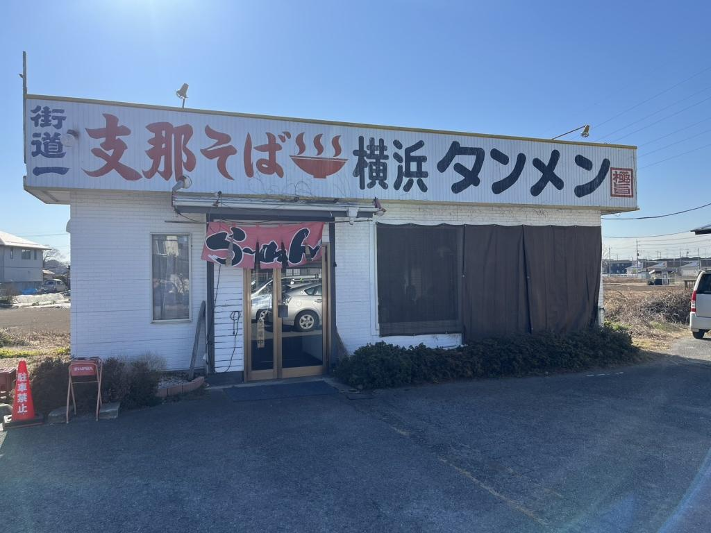
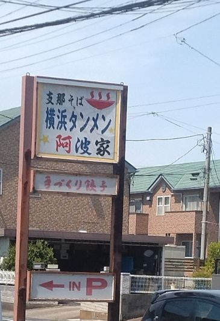